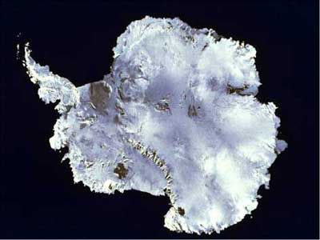
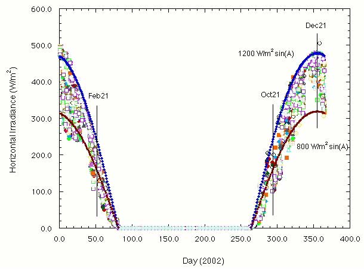

|  The Antarctic plateau encompasses a vast inland area of the ice-bound continent, 5 million square kilometers (almost 2 million sq miles). It is characterized by low snowfall, light winds, and extreme cold. The coldest temperature recorded on earth occurred here, recorded at the Russian Vostok Antarctic station. The Antarctic plateau is also very high at 2800 m above sea level. While most would not think of such a cold place being a desert, the Antarctic plateau is actually the dryest place on the face of the Earth, receiving less than 50 mm of precipitation, all of which is bound up in the form of snow. Because it is so dry, cold, and high, there is hardly ever any fog, and the sky is uncommonly clear.  The austral summer is an ideal time and place for a solar-powered device. Although the temperature hovers somewhere between -20 and -40 C, there is continuous daylight for several months. As already mentioned, the sky is uncommonly clear. The fine-grained snow for miles and miles results in an extremely high albedo, roughly 95% in all directions. The result is that there is an extraordinary amount of light compared to the middle-latitudes that the United States resides in. The Sun on a typical summer day will irradiate the Antarctic plateau with between 800 and 1200 W/m2 (see graph). In contrast, the typical insolation received during the New Hampshire winter, which encounters similar cold temperatures and sun elevation angles, on a clear day is only 600-800 W/m2. That is the amount of power received by a surface that is normal to the sun. But even surfaces that face away from the Sun will receive several hundred W/m2 due to the uniform scattering off the snow and sky. An additional benefit is that solar cells tend to perform better at cold temperatures, increasing their power output by 10-20% over that temperature range. This portion of the continent, in contrast to the coast or mountain ranges, is nearly featureless. The only ground features are sastrugi, small dune-like ripples in the snow surface, which is otherwise quite firm and hardpacked. Typical ice hazards, such as crevasses and upthrusts, are not encountered until one reaches the outer fringes of the ice sheet. The flat and obstacle-free landscape makes autonomous navigation relatively simple GPS reception is particularly good. One can simply find a route by going from waypoint to waypoint. It is well that one does not need to work hard to avoid obstacles, as cameras have difficulty in ubiquitous brightness and low-contrast of the snow surface. Lastly, the firm snow means that one can have good traction and low rolling resistance, as tracks and tires do not sink deeply into the snow. |
||
| Mission Page: [1] | [2] | [3] | [4] | ||
| [Main] | [Mission] [Science] | [Papers] | [Pictures] | [Team] |
|
Site © Thayer School of Engineering, Dartmouth College, Hanover, N.H. |